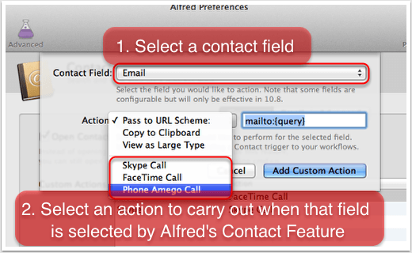
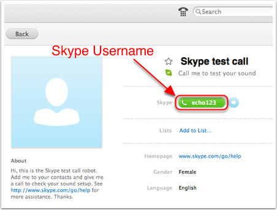
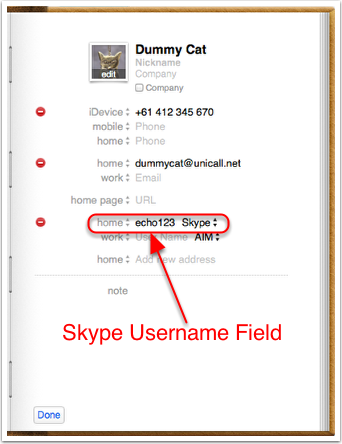
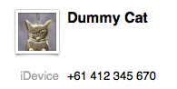
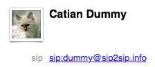
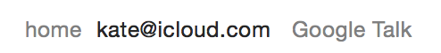
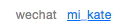
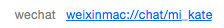

Each call component represents a method to communicate with your contact. For example, Skype Call component enables you to communicate with your contact through Skype. Each call component has three potential working modes: audio, video call or text.
To call a target:
call TARGETTo call a target with options:
call SHORT_OPTIONS TARGETYou can also mix options with target information:
call PARTIAL_SHORT_OPTIONS PARTIAL_TARGET ... # ... means more PARTIAL_SHORT_OPTIONS or PARTIAL_TARGET. This helps you to progressively refine your search results as you type.TARGETAny of the following could be a TARGET:
PARTIAL_TARGET (All)PARTIAL_TARGETPARTIAL_TARGET is a combination of name initials, first and last name and first and last phonetic name. The name initials, if not separated, must be placed as the first PARTIAL_TARGET. Spaces between PARTIAL_TARGETs are treated as boolean logic ANDs. This applies to all call components. For example:
call guan gui
call gui guan
call gg
call g g
call 桂 冠
call g 冠
call 桂冠 # they all search for Guan Gui's contact information
call 冠桂
call gg 桂
call gg guan 桂 gui
call gg gua gu
call gg guan gui guan gui 桂 冠SHORT_OPTIONS and PARTIAL_SHORT_OPTIONSThey both start with - and are followed with any combination of the followings:
COMPONENT_CODE. This is to show search result from specified call component. The result is additive. For example:
call -sf TARGET # search Skype and FaceTime
call -s TARGET -fp # search Skype, FaceTime and Phone Amego
call TARGET -h # search iPhonea. This is the default option if none of the options presented in this section are provided. This means all call components are selected for searching. The result is additive. For example:
call -sa TARGET
call -a TARGET # They are the same
call TARGET!. This is to prohibit contact thumbnails caching. For example:
call -!a TARGET # search for all without thumbnails
call -s! TARGET # search for Skype without thumbnailsAny combination of call modifiers: audio (_), video (+) or text (=). The result is additive. For example:
call -_f TARGET # show FaceTime audio call results for TARGET
call -_+f TARGET # show both FaceTime audio and video call results for TARGET
call -mswf= TARGET # only show text results from possible Messages, Skype, WeChat and FaceTime search results for TARGET
call TARGET -+= # only show video call and text results from all possible search results for TARGETYou can type call - to list all options.
COMPONENT_CODEA COMPONENT_CODE is the short option letter for each call component. For example, Skype Call component has “s” as its COMPONENT_CODE. Please refer to Call Component Code column of the table in Supported Call Components for which letter corresponds to which call component.
For sake of convenience, Uni Call also provides following aliases:
call + COMPONENT_CODE_c = call -COMPONENT_CODE_c. For example, the followings are equivalent:
call -f TARGET # search for FaceTime
callf TARGETaudio = call -_. For example, the followings are equivalent:
audio TARGET # only show audio call from all possible search results for TARGET
call -_ TARGETvideo = call -+. For example, the followings are equivalent:
video TARGET # only show video call from all possible search results for TARGET
call -+ TARGETtext = call -=. For example, the followings are equivalent:
text TARGET # only show text from all possible search results for TARGET
call -= TARGETLong options allow user to perform some utility functions as well as setting up their preferences towards Uni Call. They are prefixed with -- (double dashes).
To list all long options:
call --To list long options for a call component with COMPONENT_CODE_c:
call -COMPONENT_CODE_c-
callCOMPONENT_CODE_c --For example:
call -p-
# and
callp --
# both list options for Phone Amego Call componentAlternatively, you can make calls using Alfred’s Contacts Feature. There will be contact actions available for you to choose from in Alfred’s Contacts Feature (under Alfred Preferences > Features > Contacts).

If you only make use of several call components in your daily life, you can completely disable others. Then your Uni Call will act as if it only has those call components working internally. In reality, this will also speedup your Uni Call.
To disable call components:
call --disable COMPONENT_CODES yesTo re-enable disabled call components:
call --enable COMPONENT_CODES yesWhen a call component is disabled, its corresponding Alfred Preferences will be automatically removed; later when it is enabled again, its Alfred Preferences will then be automatically restored.
The default call component order is the order of call component candidates by default shown in search results. If you would like certain call component candidates to be always shown among top of other search results, you can type the following command to reorder call components:
call --reorder COMPONENT_CODES yesThe COMPONENT_CODES is defined in COMPONENT_CODE section.
All Uni Call related preferences are stored persistently in ~/Library/Application Support/Alfred 2/Workflow Data/net.guiguan.Uni-Call/config.plist. The meaning of “persistently” is that they will be kept after you upgrade to future Uni Call versions.
Alfred preferences store necessary information about how Uni Call is constructed internally in Alfred. They are kept in info.plist file of Uni Call workflow folder. You can access the folder by right click Uni Call workflow in Workflows tab of Alfred Preferences window, then select Show in Finder.
In order to present you your contact thumbnails in search results with speed, Uni Call caches them in ~/Library/Application Support/Alfred 2/Workflow Data/net.guiguan.Uni-Call/thumbnails/. Their lifespans are one week. Be default, when you install a fresh copy of Uni Call or upgrade to a new version, Uni Call uses the following command to build a full thumbnail cache for all your contacts from Apple Contacts:
call --buildfullthumbnailcache yesIf you decided not to show contact thumbnails, you can completely remove the cache using:
call --destroythumbnailcache yesand then use -! option along with other search options to prohibit the automatic thumbnail generation and caching. You can change script filters to adopt -! option too.
Use the following option to open documentation on Uni Call official site:
call --openhelpdocumentationUse the following option to send user feedback directly to my email address:
call --contactauthorUse the following option to format phone numbers in Apple Contacts to their corresponding locale format:
call --formatcontactsphonenumbersUse the following option to add Pinyin (phonetic names) for 中文名 (Chinese names) in Apple Contacts:
call --addcontactsphoneticnamesSkype Call requires the newest version of Skype.
Among the search results for Skype Call, contact thumbnails will be shown in color:#47baec border:
If the Skype user corresponding to a particular Skype username is detected online (Skype has to be opened for the detection to work), his or her thumbnail will be shown in color:#47baec border with color:#47baec inner shadow:
If the Skype hasn’t been opened yet, Skype Call will open it and ensure it is online before starting the phone call. When making a phone call, Skype Call won’t change your Skype online status, and no annoying confirmation dialog box will be popped up.
The alternative url scheme skype:{query}?call approach is not able make a phone call when Skype hasn’t been opened in some system environment, and it will also cause the annoying confirmation dialog to be popped up every time when you try to make a Skype call. (Refer to v5.31 changelog)


FaceTime Call requires the newest version of FaceTime.
Among the search results for FaceTime Call, contact thumbnails will be shown in color:#f74598 border:
You can nominate a particular phone or email field of a person in Apple Contacts to be FaceTime Call targets of your choice, which will opt out other phone numbers and emails to be shown in the searching results. To do so, simply put a customized label, either iMessages, FaceTime, iPhone, iPad, Mac, iDevice, Apple or iCloud in front of phone or email nominees:

You can also use comma to separate multiple labels. For example, using label “iPhone, home” in front of a phone number will nominate that phone number as well as labelling that number as “home” in the Uni Call search results. Note that the label “iPhone” is only used for target nomination, but not used to label Uni Call search results.
The thumbnail of a person who has nominated phone number or email will be shown in color:#f74598 border with color:#f74598 inner shadow:
FaceTime Call uses url scheme facetime:{query} to launch FaceTime and start a call.
FaceTime’s default working mode is video call. If you would like to use audio as FaceTime’s default working mode, you can use the following command:
call -f-setdefaultworkingmode _ yesTo set it back to use video call by default:
call -f-setdefaultworkingmode + yesWith the help of Phone Amego, you can turn your Mac into a bluetooth headset and remotely control your real mobile phone to start and receive real phone calls. Sweet?!
Phone Amego Call requires the newest version of Phone Amego.
Among the search results for Phone Amego Call, contact thumbnails will be shown in color:#fcbd5a border:
Phone Amego Call uses url scheme phoneAmego:{query};alert=no to launch Phone Amego and start a call.
You can assign an easy to remember alias to a complicated device label. For example:
callp --map ip to "Guan's iPhone" yesThen in the future you can make a bluetooth phone call through device “Guan’s iPhone” using “/” extra parameter syntax as follows:
callp TARGET /ipTo remove the assigned alias:
callp --unmap ip yesYou can specify a phone number extension using either , or ; plus the extension part. Phone Amego will then dial the main phone number part, and then wait for 2 seconds before dialling the extension part automatically. For example:
callp 1555;1
callp 1555,1 # they will both dial 1555, wait for 2 seconds and dial 1SIP Call requires the newest version of SIP client Telephone.
Among the search results for SIP Call, contact thumbnails will be shown in color:#fcbd5a border:
If you store a SIP address in a contact’s Url field with custom label “sip”, such as follows:

then the corresponding thumbnail for that person will be shown in color:#fcbd5a border with color:#fcbd5a inner shadow:
SIP Call uses url scheme tel:{query} for phone numbers and url scheme sip:{query} for SIP addresses to launch Telephone and start a call.
Be default, SIP Call will not show phone number results. You can turn on/off SIP call to phone numbers:
call -i-turncallingphonenumber on # turn on
call -i-turncallingphonenumber off # turn offPushDialer Call requires the newest version of PushDialer.
Among the search results for PushDialer Call, contact thumbnails will be shown in color:#9e5132 border:
PushDialer Call uses url scheme pushdialer://{query} to launch PushDialer and start a call. By default, PushDialer will send out a Growl notification to confirm a dialling out.
GrowlVoice Call requires the newest version of GrowlVoice. Please note that as of version 2.0.3 (30), GrowlVoice is dying. A quick and dirty hack to fix the dying GrowlVoice can be found from here and there.
Among the search results for GrowlVoice Call, contact thumbnails will be shown in color:#37a940 border:
GrowlVoice Call uses url scheme growlvoice:{query} to launch GrowlVoice and start a call.
You can record your phone calls and have the conversations automatically recognised for fast searching and analysis with the help of CallTrunk.
CallTrunk Call requires the newest version of a country specific Call Trunk app for Mac OS X, such as Call Trunk AU.
Among the search results for CallTrunk Call, contact thumbnails will be shown in color:#1f3a33 border:
When you have multiple country specific Call Trunk apps installed, you can use –setdefaultcountry long option of CallTrunk Call to set a default one to use. For example:
callk --setdefaultcountry au yeswill set Australia (AU) as the default country for Call Trunk. Therefore, when you dial out a CallTrunk call in Uni Call, the Call Trunk AU app will be used to serve the purpose.
Apart from setting the default country, you can also temporarily overwrite the setting for a particular dialling out by providing an extra parameter using “/” syntax. For example:
callk TARGET /uswill set Unite States (US) as the country for Call Trunk. Therefore, the Call Trunk US app will be used to dial out the call.
Fritz!Box Call requires the newest version of Frizzix.
Among the search results for Fritz!Box Call, contact thumbnails will be shown in color:#9b3130 border:
Dialogue Call requires the newest version of Dialogue.
Among the search results for Dialogue Call, contact thumbnails will be shown in color:#c600bd border:
iPhone Call requires Mac OS X 10.10 (Yosemite) and above. It makes use of Yosemite’s continuity feature to connect your iPhone via Bluetooth and WiFi for making phone calls directly from your Mac OS X. The newest version of FaceTime app should be installed as well.
Among the search results for iPhone Call, contact thumbnails will be shown in color:#fd7358 border:
Messages Call requires the newest version of Messages.
Among the search results for Messages Call, contact thumbnails will be shown in color:#2187F8 border:
You can nominate a particular phone or email field of a person in Apple Contacts to be Messages Call targets of your choice, which will opt out other phone numbers and emails to be shown in the searching results. To do so, simply put a customized label, either iMessages, FaceTime, iPhone, iPad, Mac, iDevice, Apple or iCloud in front of phone or email nominees:
You can also use comma to separate multiple labels. For example, using label “iPhone, home” in front of a phone number will nominate that phone number as well as labelling that number as “home” in the Uni Call search results. Note that the label “iPhone” is only used for target nomination, but not used to label Uni Call search results.
The thumbnail of a person who has nominated phone number or email will be shown in following border colour with inner shadow:
Messages Call component also supports for Google Talk/Hangout. By default, it is enabled. You can turn this feature off:
call -m-turntextinggtalk offLater on, when you decide to turn this feature back on:
call -m-turntextinggtalk onMessages Call will first pull Google Talk/Hangout addresses from Apple Contacts’ IM section with type Google Talk:

Then it will pull entries from email section if they are either email addresses suffixed with “gmail.com” or they are labelled as gmail or gtalk. Similar ideas regards nomination above apply here too.
Messages Call’s Google Talk/Hangout feature has a unique functionality that can represent User’s Google Talk/Hangout real-time online status in user’s thumbnail with different colours. You must first log in your Google Talk/Hangout account in Messages to use this feature.
WeChat Call requires the newest version of Mac WeChat.
Among the search results for WeChat Call, contact thumbnails will be shown in following border colour with inner shadow:
Your contact’s WeChat usernames should be store in the URL section in Apple Contacts, and labelled as either wechat, weixin or 微信. Such as:

You may also want to prefix a WeChat username with weixinmac://chat/ so that when you click on the link, your WeChat app will be brought up just as what will happen using WeChat Call. Such as:
